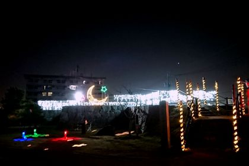

Nost/Wind
OFFICIAL WEB SITE

Novel
Sound
Blog
About
■ What's new ■
2025.09 ・Webサイトを移転。 GitHub Pagesでの運用に切替えました。 2022.12 ・ティラノゲームフェス2022に参加中です！ 2022.10 ・PLiCyゲームコンテスト2022にて 『流星Refrain』が「準敢闘賞」をいただきました！ ありがとうございます！！ 2022.9 ・ノベルゲーム『流星Refrain』Ver.2.13b公開 ティラノゲームフェス2022に参加中です！ 2022.5 ・ノベルゲーム『流星Refrain』Ver.2.00公開 2022.1 ・ノベルゲーム『流星Refrain』公開スタート 2021.12 ・Webサイトオープン ・ノベルゲーム『流星Refrain』情報掲載